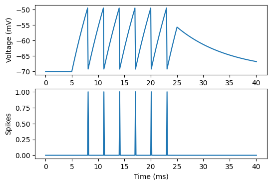
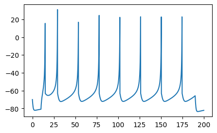
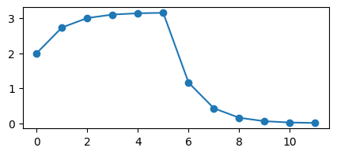

Simplified models¶
In this tutorial, you will learn how to:
- use
Jaxleyto simulate simplified neuron models such as: - Leaky-integrate-and-fire neuron models
- Izhikevich neuron models
- Rate-based neuron models (unit-free)
- define your own simplified neuron models
Here is a code snippet which you will learn to understand in this tutorial:
# Leaky integrate-and-fire neurons.
from jaxley.channels import Leak, Fire
cell = jx.Cell()
cell.insert(Leak())
cell.insert(Fire())
cell.record("v")
cell.record("Fire_spikes")
# Izhikevich neuron models.
from jaxley.channels import Izhikevich
cell = jx.Cell()
cell.insert(Izhikevich())
cell.record("v")
# Rate-based neuron models (unit-free).
from jaxley.channels import Rate
cell = jx.Cell()
cell.set("length", 1.0 / (2 * pi * 1e-5)) # Make external current and synapses unit-free.
cell.insert(Rate())
cell.record("v")
Jaxley focuses on biophysical, Hodgkin-Huxley-type models. These models follow the equation
where \(C\) is the capacitance, \(V\) is the membrane voltage, and \(i\) is a membrane current which is linear in the voltage, for example \(i=g_{\text{Leak}} (E_{\text{Leak}} - V)\). All Hodkgin-Huxley-type models fall into this category, but many simplified neuron models do not follow these equations. Nonetheless, Jaxley can also simulate such simpler neuron models. This tutorial will teach you how to do this.
import matplotlib.pyplot as plt
import jax.numpy as jnp
import jaxley as jx
Pre-configured simplified models¶
We will first go over three popular, pre-configured neuron models (LIF, Izhikevich, rate-based).
Leaky integrate-and-fire neuron models¶
Leaky integrate-and-fire (LIF) neurons follow the equation:
with the reset condition:
The first equation is consistent with the Hodgkin-Huxley mechanism (with only a leak channel), but the reset is not. To implement LIF neurons, run:
from jaxley.channels import Leak, Fire
cell = jx.Cell()
cell.insert(Leak())
cell.insert(Fire())
cell.record("v")
cell.record("Fire_spikes")
Added 1 recordings. See `.recordings` for details.
Added 1 recordings. See `.recordings` for details.
/Users/michaeldeistler/Documents/phd/jaxley/jaxley/channels/non_capacitive/spike.py:29: UserWarning: The `Fire` channel does not support surrogate gradients. Its gradient will be zero after every spike.
warn(
As the warning says, Jaxley does not yet support optimizing LIF neuron models with gradient descent because it does not yet implement surrogate gradients. We can still simulate LIF neurons as always:
dt = 0.1
t_max = 40.0
cell.stimulate(jx.step_current(5.0, 20.0, 0.005, dt, t_max))
v = jx.integrate(cell, delta_t=dt)
time_vec = jnp.arange(0, t_max + 2 * dt, dt)
fig, ax = plt.subplots(2, 1, figsize=(6, 4))
_ = ax[0].plot(time_vec, v[0])
_ = ax[1].plot(time_vec, v[1])
_ = ax[0].set_ylabel("Voltage (mV)")
_ = ax[1].set_ylabel("Spikes")
_ = ax[1].set_xlabel("Time (ms)")
Added 1 external_states. See `.externals` for details.

Izhikevich neuron models¶
Finally, Izhikevich neuron models follow the equation:
with the reset condition:
The voltage is not consistent with the standard Hodgkin-Huxley equations because: - it does not include a capacitance - the update is not linear in the voltage (\(0.04 V^2\))
To implement this equation in Jaxley, run:
from jaxley.channels import Izhikevich
cell = jx.Cell()
cell.insert(Izhikevich())
cell.record("v")
Added 1 recordings. See `.recordings` for details.
/Users/michaeldeistler/Documents/phd/jaxley/jaxley/channels/non_capacitive/izhikevich.py:28: UserWarning: The `Izhikevich` channel does not support surrogate gradients. Its gradient will be zero after every spike.
warn(
Again, Jaxley does not yet support optimizing Izhikevich neuron models with gradient descent (because of the non-differentiable reset). Let’s simulate this model:
dt = 0.1
t_max = 200.0
cell.stimulate(jx.step_current(10.0, 180.0, 0.012, dt, t_max))
v = jx.integrate(cell, delta_t=dt)
time_vec = jnp.arange(0, t_max + 2 * dt, dt)
fig, ax = plt.subplots(1, 1, figsize=(5, 3))
_ = plt.plot(time_vec, v.T)
Added 1 external_states. See `.externals` for details.

Rate-based neuron models¶
Rate-based neuron models follow the equation
A rate-based neuron model is, in principle, consistent with Hodgkin-Huxley equations, and it could be implemented with a Leak channel in Jaxley. However, rate-based neuron models are sometimes assumed to be unit free. To implement a unit-free rate-based neuron model in Jaxley, use the Rate mechanism and define radius and length of the cell such that stimuli or synaptic inputs become unit free:
from jaxley.channels import Rate
from math import pi
cell = jx.Cell()
# If `length = 1 / (2 * pi * 1e-5) um` and `radius = 1.0um`, then `area = 1e5 um^2 = 1e-3 cm2`.
# The `1e-3` corrects for stimuli being in `nA`, but voltage updates being in `mV * ms = uA`.
# As such, setting `length = 1 / (2 * pi * 1e-5) um` and `radius = 1.0 um` effectively makes
# the external currents or synaptic currents unit-free.
cell.set("length", 1.0 / (2 * pi * 1e-5))
cell.set("radius", 1.0) # 1.0 is also the default.
cell.insert(Rate())
Let’s simulate this cell:
cell.stimulate(2.0 * jnp.ones((5,)))
cell.set("v", 2.0)
cell.record("v")
dt = 1.0
t_max = 10.0
v = jx.integrate(cell, t_max=t_max, delta_t=dt)
time_vec = jnp.arange(0, t_max + 2 * dt, dt)
fig, ax = plt.subplots(1, 1, figsize=(5, 2))
_ = plt.plot(time_vec, v.T, marker="o")
Added 1 external_states. See `.externals` for details.
Added 1 recordings. See `.recordings` for details.

The voltage increases during the the first 5 timesteps, because we are stimulating the cell during that time, and then quickly drops off to zero.
How to implement your own simplified models¶
If the models above do not offer enough flexibility for your usecase, you can also implement mechanisms yourself. For this, it is helpful if you first read the tutorial on how to build channel models in Jaxley.
As you learned in this tutorial, every channel returns a current in its compute_current method. This is the current that turns up on the right side of the Hodgkin-Huxley equation
If you specifically want to update voltages in a way that does not fall within this equation, you should instead update voltages in the update_states() method. Let’s have a look at how the reset in a leaky integrate-and-fire neuron is implemented:
from jaxley.channels import Channel
class Fire(Channel):
"""Mechanism to reset the voltage when it crosses a threshold."""
def __init__(self, name = None):
self.current_is_in_mA_per_cm2 = True
super().__init__(name)
self.channel_params = {f"{self.name}_vth": -50, f"{self.name}_vreset": -70}
self.channel_states = {}
self.current_name = f"{self.name}_fire"
def update_states(self, states, dt, v, params):
"""Reset the voltage when a spike occurs and log the spike"""
prefix = self._name
vreset = params[f"{prefix}_vreset"]
vth = params[f"{prefix}_vth"]
v = jax.lax.select(v > vth, vreset, v)
return {"v": v}
def compute_current(self, states, v, params):
return jnp.zeros((1,))
def init_state(self, states, v, params, delta_t):
return {}
As you can see, this channel directly modifies voltages v in the update_states method. Beyond this, it returns zero current for the Hodgkin-Huxley update (but the Leak channel does perform a Hodgkin-Huxley-type update).
That’s it, you should now be able to define your own simplified neuron models in Jaxley! For each of these models, you can now connect multiple neurons in a network. You can also build networks in which some neurons are simplified and others follow Hodgkin-Huxley dynamics (or even include morphological detail). Have fun!